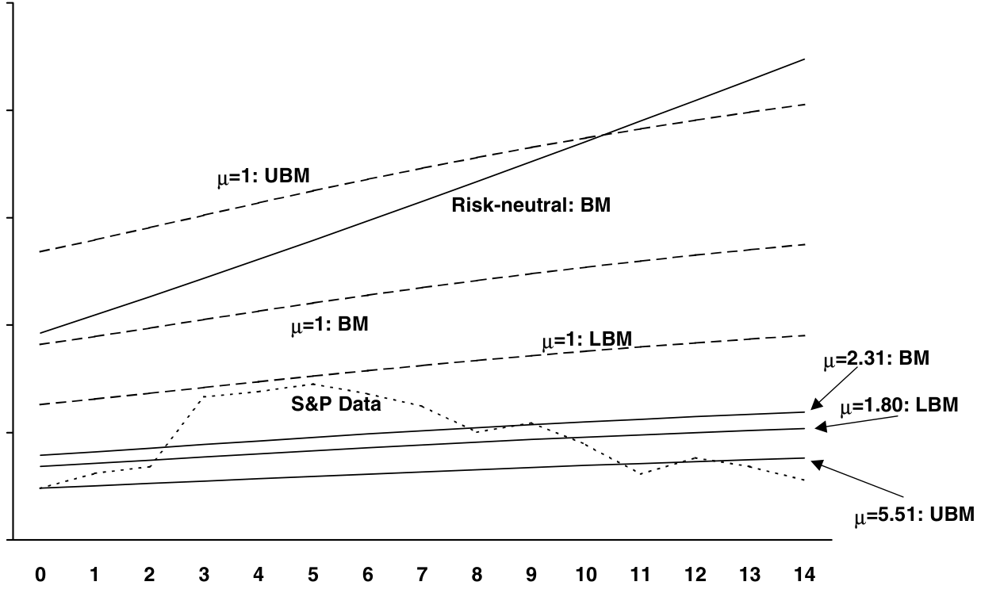
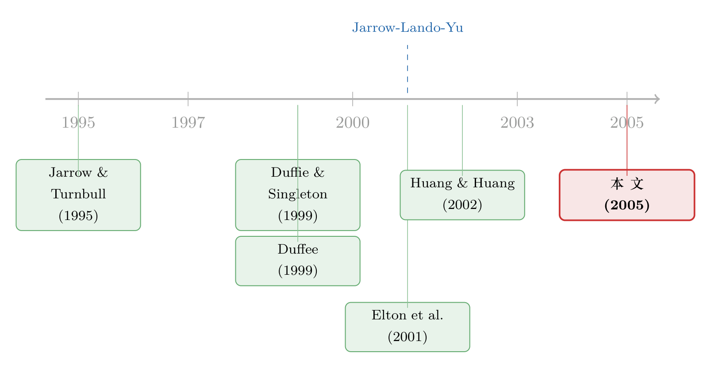

违约真的发生时，市场到底给没给你保费？
本文读的是 Driessen (2005, Review of Financial Studies)：他把公司债的预期超额收益拆成六块——两个共同利差因子、公司特有利差、与无风险利率的联动、税收、流动性，外加最关键的第六块「违约事件本身的跳跃风险溢价」。结论有点反高潮：共同因子、税、流动性这三块就已经吃掉了大半「信用利差之谜」，留给违约跳跃的那块虽然为正、却只值得一个 t = 1.2 的信心。
1 引言：一道赔率算不平的账
先说一个让做信用的人睡不着的老问题。
你买一只 BBB 级的公司债，它比同期限国债多给你一截收益，叫信用利差 (credit spread)。直觉上，这截利差就是赔你「将来可能违约」的损失——违约概率乘以违约损失。可一旦真把历史违约率、历史回收率代进去算一算，你会发现：利差远远高于「期望损失」本身。换句话说，即便扣掉所有该赔的违约损失，公司债还是给了你一笔说不清的超额收益。
这就是所谓的「信用利差之谜」(credit spread puzzle)。Elton et al. (2001)、Huang and Huang (2002) 都撞上过它：用违约风险怎么也凑不出观察到的利差水平。
接着，一个自然的问题是：这笔多出来的钱，到底在补偿什么？候选答案一大堆——税收（公司债的票息要交州税，国债不交）、流动性（公司债比国债难脱手）、还有「利差会乱跳」这件事本身带来的系统性风险。可在 Driessen 之前，没人把这些东西装进同一个模型里，一次性地各自称重。
然后，真正关键的一步在于：Driessen 把「风险」掰成了两半，而这正是全文的题眼——
- 一半是利差的连续波动（diffusion）：明天没违约，但信用利差因为市场情绪、宏观冲击而上下漂移，这是一种系统性风险，可以被定价；
- 另一半是违约事件本身的那一下跳跃（jump）：从「活着」到「破产」的瞬间，债券价格往下砸一个坑。
问题是：第二种风险——那一下跳跃——市场给溢价了吗？
这个问题不是文字游戏。Jarrow, Lando, and Yu (2001) 证过一个漂亮的结论：如果违约在公司之间是「条件独立」的，且市场上有无穷多家公司，那么违约跳跃可以被完全分散掉，于是它不该有风险溢价。用模型的话讲，风险中性强度应当约等于真实强度。Driessen 的整篇文章，本质上就是去实测这条「条件分散化」(conditional diversification) 假说成不成立。
2 把超额收益拆成六块
Driessen 沿用 Duffie and Singleton (1999) 的简约式 (reduced-form) 框架。一只尚未违约、由公司 j 发行、T 到期的零息债，时刻 t 的价格是
$$V_j(t,T) = E^Q_t\!\left[\exp\!\left(-\int_t^T (r_u + s_{j,u})\,du\right)\right], \qquad s_{j,t} \equiv h^Q_{j,t}\,L$$
这里 r 是无风险短利率，s 是瞬时信用利差，它等于风险中性违约强度 h^Q（一个条件泊松过程的到达率）乘以违约损失率 L。Duffie–Singleton 的「市值回收」(recovery of market value) 假设让这个公式干净得惊人：只要把瞬时利差 s 建模出来，债券就能定价，你甚至不必知道违约到底独不独立。损失率 L 在这里被钉成常数 56%，而且——这一点后面很重要——它只在估违约事件溢价时才用得上，估利差风险溢价时完全用不到。
利差怎么动，取决于强度怎么动。Driessen 把每家公司的风险中性强度写成 K 个共同因子、一个公司特有因子、外加两项与无风险利率联动的负载之和：
$$h^Q_{j,t}\,L = g_{0j} + \sum_{i=1}^{K} g_{ij}\big(F_{i,t}-\theta^F_i\big) + \big(G_{j,t}-\theta^G_j\big) + a_{1j}\big(X_{1,t}-\theta_1\big) + a_{2j}X_{2,t}$$
之所以用一组「看不见的」潜在因子 F、而不是 Fama–French 那种可观测因子，是因为 Collin-Dufresne, Goldstein, and Martin (2001) 发现：股票收益、宏观变量这些看得见的东西，解释不了不同公司信用利差为什么会一起动。所有因子都走平方根扩散过程：
$$dF_{i,t} = \kappa^F_i\big(\theta^F_i - F_{i,t}\big)\,dt + \sigma^F_i\sqrt{F_{i,t}}\;dW^F_{i,t}$$
κ 是均值回复速度，θ 是长期均值，σ 是波动。平方根过程的好处是强度永不为负，且债价是因子的指数仿射函数 [Duffie and Kan (1996)]，可以快速求解。
把这套东西对 Itô 展开，Driessen 推出了瞬时预期超额收益的核心分解式——公司债相对同期限国债能多赚钱，恰好来自六条独立的渠道：
剩下的第六块——票息的税收差异——在带息债的定价里另算。请记住第四项 (μ-1)h^P L：它是唯一直接来自「违约那一下跳跃」的溢价。μ 这个数，就是整篇文章要估的东西。
3 模型的题眼：那个叫 μ 的数
把风险中性强度 h^Q 和真实强度 h^P 连起来的，是一个常数比例：
$$h^Q_{j,t} = \mu\,h^P_{j,t}$$
这条式子简单得不像主角，但它装着全文的张力。μ 是违约跳跃的风险溢价参数：
- 若
μ = 1，风险中性强度等于真实强度，违约事件没有被额外定价——这正是 Jarrow–Lando–Yu「条件分散化」成立时该出现的情形； - 若
μ > 1，市场对「违约真的发生」这件事索要了额外保费，说明违约跳跃没法被完全分散掉。
为什么分散不掉？Jarrow et al. 自己给了两个理由：一是可能有若干公司会同时违约（违约并非条件独立）；二是即便条件独立，只要市场上债券数量有限，跳跃风险也无法被无穷地摊薄。Driessen 的模型对这两种解释照单全收——因为定价尚未违约的债券（公式 4）根本不需要表态违约到底独不独立，这也意味着，他无法从债价里区分这两种机制，只能合在一起估一个 μ。
直觉上，μ 度量的是：真实世界里很少发生的违约，在风险中性世界里被「放大」了多少倍。利差里既有对利差波动的补偿，也有对这一下跳跃的补偿；前五块拆干净之后，剩下的那点系统性误差，全压在 μ 上。
4 识别策略：为什么非得分两步
这里是全文方法论上最聪明的地方。
如果只盯着债券价格，你永远估不出 μ。原因在公式 (4)：债价只依赖风险中性强度 h^Q，而 h^Q = μ h^P——价格里 μ 和真实强度 h^P 是粘在一起、无法分离的。换句话说，单看价格，你能把风险中性世界刻画得很精确，却看不见真实世界违约得有多频繁。
于是 Driessen 分两步走：
第一步，用卡尔曼滤波极大似然 (Kalman filter QML)，纯粹拿债券价格去估那套风险中性强度的仿射因子模型（公式 5、6）。这一步顺着 Duffee (1999) 的做法，直接用带息债的到期收益率来估参数，避开了人为插值零息利率。为了对付参数太多，整套估计被拆成四小步：先估国债两因子模型，再估流动性因子，再估共同因子与流动性负载，最后估公司特有因子。这一步交出的，是各公司风险中性强度 h^Q 的完整时间序列。
但真正关键的一步在于第二步：引入外部信息——历史违约率。Driessen 把估出来的 h^Q 除以一个待定的 μ，得到真实强度 h^P，再让模型隐含的违约概率去对齐 Moody's、S&P 报告的历史年度违约率。μ 就是从「价格隐含的违约率」与「历史实现的违约率」之间那道缺口里被认出来的。
这一步的妙处，也是它的软肋：历史违约率本身是带噪声的小样本（投资级公司十年里违约寥寥）。所以 Driessen 在估 μ 的标准误时，同时纳入了两个来源的抽样误差——历史违约率的，和第一步因子模型参数估计的。正是这个诚实的标准误，给出了那个不太提气的 t = 1.2。
5 数据
- 公司债：Bloomberg 公司债数据库的周度中间报价，
1991-02-22至2000-02-18。样本起点是 Duffee (1999) 用过的 161 家公司，要求每家至少有两只债、至少 100 周有数据，最终留下104家、592只债。剔除含赎回/回售/偿债基金条款的债，只留固定半年付息债。 - 观测单位：公司–周。中位数公司平均每周用
3只债拟合，470周里有378周能观察到至少两只债的价格。 - 评级：样本末期全是投资级——
2家 AAA、13家 AA、58家 A、31家 BBB。 - 清洗：利差超过 400bp 或低于 −50bp、或一周内跳动逾 100bp 的报价被当作错误剔除，
140,389个观测里删掉了616个。 - 税率：沿用 Elton et al. (2001) 估的有效州税率
4.875%。
时间序列上还藏着一个事件：1991–1998 年利差一路收窄，1998 年秋俄罗斯/LTCM 危机一来，利差急剧抬升并居高不下——这种跨评级的共同跳动，正是「共同因子模型」最直接的辩护。
6 主要结果：谜，其实没那么谜
第一步的结论先立住了几块积木：市场范围的共同利差风险被定价了（两个共同因子上的风险溢价显著），而公司特有的利差风险没有被定价；信用利差与国债期限结构负相关；流动性是利差的重要决定项，且呈现一条向下倾斜的流动性利差期限结构——越新发的债越贵（越流动），随债龄上升而变便宜。税收也解释了利差水平的一部分。
接着是那个经典尴尬：在不放任何违约事件溢价（即 μ=1）时，模型会高估观察到的违约率，同时低估预期超额收益和利差——「信用利差之谜」如约而至。

Figure 3: also contains the empirical yearly conditional default rates
然后第二步登场。加入 μ 去拟合历史违约率，估出来的 μ 确实大于 1、为正，方向上支持「违约事件被定价」，而且它显著改善了对历史违约率的拟合。但它的标准误很大，t = 1.2——统计上无法下定论。Driessen 的措辞很克制：一旦把共同因子风险溢价、税、流动性都算进去，「信用利差之谜存在」的统计证据其实并不强。
经济意义上，违约跳跃溢价主要对 BBB 级有意义：它解释了一只 10 年期 BBB 债每年约 31 个基点的预期收益；同口径下，AA 级只值 6bp，A 级 12bp。对 AA、A 而言，真正的大头是税与流动性，外加共同因子风险。作为对照，Huang and Huang (2002) 用结构模型只能解释约 30% 的 BBB 利差，与本文共同利差因子风险溢价的解释力相当——这从侧面印证：单靠违约风险，确实填不平利差，得请税和流动性进来帮忙。
把这条线放到流动性的语境里看会更有意思（关于公司债利差里那块「流动性」到底有多大、怎么动，可参见《一个买卖价差，为什么越来越贵了？》）；而「公司债到底有没有把风险换成收益」这个更晚近的问题，则见《公司债里，风险终于换来了收益》。
7 文献脉络
这条研究脉络，是「怎样给会违约的债定价」一步步长出来的。
最早是两条腿并行：Jarrow and Turnbull (1995)、Madan and Unal (1998) 开了简约式的路子，把违约当成一个带强度的跳跃事件来定价；Longstaff and Schwartz (1995) 则在结构式一侧，让利差与无风险利率联动。接着，Duffie and Singleton (1999) 用「市值回收」假设把简约式框架打磨到极简——只需建模瞬时利差，本文整套定价都站在它的肩膀上。Duffee (1999) 第一个认真地逐公司估出了「违约风险的价格」，本文则把它推广成共享共同因子的联合模型。

到了世纪之交，矛盾摊开了：Elton et al. (2001) 指出期望损失加税收凑不齐利差，得靠股票市场因子补；Huang and Huang (2002) 把各路结构模型拿历史违约率一对，发现它们普遍低估投资级利差。而 Jarrow, Lando, and Yu (2001) 从理论上点出「条件分散化」——违约跳跃在理想条件下不该被定价，并做了第一次分散化分析，却没有去估违约事件溢价。Driessen (2005) 站的正是这个空位：他是据其所知第一个把违约事件风险溢价 μ 单独估出来、并评估其经济重要性的人，顺手指出 Jarrow 等人用马尔可夫迁移模型会把 μ 估偏低。几乎同时，Collin-Dufresne, Goldstein, and Helwege (2003) 从「传染」(contagion) 角度给了违约跳跃被定价的另一种理论解释，与本文遥相呼应。
评论与延伸（Q&A + 研究方向）
(a) 几个可能的疑问
Q：「违约事件溢价」和「利差风险溢价」到底差在哪？听上去都是违约风险。
差在「连续」与「跳跃」。利差风险溢价补偿的是没违约时信用利差的上下漂移（diffusion），这是一种几乎天天在发生的系统性波动；违约事件溢价补偿的是从存活到破产那一瞬间价格往下砸的跳跃（jump）。前者可以从债价时间序列里估，后者必须借历史违约率才认得出来。本文最大的方法贡献，就是把这两者分开称重。
Q：为什么单看债券价格估不出 μ？
因为债价（公式 4）只依赖风险中性强度
h^Q = μ·h^P，μ和真实强度h^P在价格里是乘在一起、无法拆开的。价格能告诉你风险中性世界违约多频繁，却说不出真实世界违约多频繁。要把μ单独解出来，必须引入真实世界的信息——也就是历史违约率。这正是分两步估计的根本原因。
Q：t = 1.2，那是不是说违约事件根本没被定价？
不能这么武断。点估计
μ>1、方向为正、且改善了违约率拟合，经济上对 BBB 值31bp/年，并不小。t=1.2说的是统计精度不足——历史违约率样本太小、噪声太大，撑不起一个干净的显著性。更稳妥的读法是：一旦把税、流动性、共同因子风险都摆上桌，「非得有一个违约事件溢价才能解释利差」的证据没那么强了。
Q：把损失率 L 钉成 56% 这个常数，会不会把结论带偏？
关键在于
L只进入第二步（估μ），不进入第一步（估利差风险溢价）。因为利差s = h^Q·L，定价尚未违约的债时，h^Q和L同样是粘在一起的，常数L无害。它只在把利差「翻译」成违约概率、去对齐历史违约率时才起作用——所以L的设定会影响μ的水平，却不动摇利差分解本身。
Q：用潜在因子而不是股票/宏观因子，是不是为了「拟合好看」？
不是凑数，是被数据逼的。Collin-Dufresne et al. (2001) 发现可观测的金融与经济变量解释不了利差跨公司的共同变动；既然看得见的因子抓不住这种相关性，就只能用潜在因子去捕捉那块「共同的、说不清来源的」系统性风险。代价是因子缺乏直接经济解释，好处是定价更准。
Q：1998 年俄罗斯/LTCM 危机会不会主导了整个估计？
那段利差的剧烈、跨评级的同向跳升，恰恰是「共同因子被定价」最有力的样本内证据——共同因子的风险溢价显著，很大程度上靠的就是这种全市场一起动的时刻。但反过来，它也是隐忧：
μ的识别高度依赖样本期内实际发生的违约与利差极端值，样本里投资级公司违约本就稀少，这让μ天然难估得精确。
(b) 几个可能的研究问题与提案
1. 把违约事件溢价拆成「同时违约」与「有限分散」两股
- 【经济故事】本文坦言无法区分 μ>1 是因为公司会同时违约（违约相关）还是因为债券数量有限（分散不足）。但这两者的政策含义完全不同：前者是系统性传染，后者是市场深度问题。
- 【可行性】中。需要违约相关性的直接数据（如 Das et al. 2002 路线的联合违约）或行业聚类的违约事件，配合本文的强度框架做约束。识别难点在于二者在尚未违约债价上观测等价，必须靠违约事件的横截面聚集程度这种额外矩条件来破局，doable 但吃数据。
2. 用现代高频公司债成交数据重估流动性那一块
- 【经济故事】本文的流动性因子建在「债龄」上，给出一条向下倾斜的流动性利差期限结构。但 2002 年 TRACE 之后，公司债的成交级流动性度量丰富了太多，违约事件溢价里有多少其实是被旧式流动性代理「漏算」进去的？
- 【可行性】高。TRACE 逐笔成交 + 多种流动性度量（价格冲击、Roll、零成交日）可直接替换债龄代理，重做两步估计，看 μ 的点估计与显著性如何变化。数据与方法都成熟。
3. 外资持有人与违约事件溢价的横截面
- 【经济故事】如果违约跳跃之所以被定价，部分原因是「持有人无法充分分散」，那么谁在持有就该影响 μ。外资集中持有的发行人，其持有人基础更难本地分散、危机时更易同向抛售，违约事件溢价是否系统性更高？
- 【可行性】中。需要债券层面的持有人结构（如 eMAXX/保险 NAIC 持仓）与本文式强度模型对接，按外资持有比例分组估 μ。识别担忧是持有人结构与评级、行业内生相关，得用持有人冲击（如指数纳入、本币计价变化）做工具。
4. 危机时段的 μ：违约事件溢价是不是「状态依赖」的
- 【经济故事】本文把 μ 设成常数纯为简化，但它自己也说 μ 本可随时间变。直觉上，衰退、流动性枯竭时，违约更易聚集、分散更难，μ 该更高。把 μ 做成随宏观状态切换，能否同时解释「平时谜不大、危机谜很大」？
- 【可行性】中。可用区制转移或让 μ 随宏观尾部风险变量变化，配合更长样本（含 2008、2020）。难点仍是危机期违约样本虽多但极端，估计稳定性存疑。
参考文献
- Collin-Dufresne, P., R. S. Goldstein, and J. S. Martin (2001). The Determinants of Credit Spread Changes. Journal of Finance 56(6), 2177–2207.
- Collin-Dufresne, P., R. Goldstein, and J. Helwege (2003). Is Credit Event Risk Priced? Modelling Contagion via the Updating of Beliefs. Working paper, Carnegie Mellon University.
- Dai, Q., and K. J. Singleton (2000). Specification Analysis of Affine Term Structure Models. Journal of Finance 55(5), 1943–1978.
- Driessen, J. (2005). Is Default Event Risk Priced in Corporate Bonds? Review of Financial Studies 18(1), 165–195.
- Duffee, G. (1999). Estimating the Price of Default Risk. Review of Financial Studies 12(1), 197–226.
- Duffie, D., and R. Kan (1996). A Yield-Factor Model of Interest Rates. Mathematical Finance 6(4), 379–406.
- Duffie, D., and K. J. Singleton (1999). Modeling Term Structures of Defaultable Bonds. Review of Financial Studies 12(4), 687–720.
- Elton, E. J., M. J. Gruber, D. Agrawal, and C. Mann (2001). Explaining the Rate Spread on Corporate Bonds. Journal of Finance 56(1), 247–277.
- Huang, J., and M. Huang (2002). How Much of the Corporate-Treasury Yield Spread is Due to Credit Risk? Working paper, Penn State University.
- Jarrow, R. A., D. Lando, and F. Yu (2001). Default Risk and Diversification: Theory and Applications. Working paper, Cornell University.
- Jarrow, R. A., and S. M. Turnbull (1995). Pricing Derivatives on Financial Securities Subject to Credit Risk. Journal of Finance 50(1), 53–86.
- Longstaff, F. A., and E. S. Schwartz (1995). A Simple Approach to Valuing Risky and Floating Rate Debt. Journal of Finance 50(3), 789–819.
- Madan, D. B., and H. Unal (1998). Pricing the Risks of Default. Review of Derivatives Research 2, 121–160.
- Yu, F. (2002). Decomposing the Expected Return on Corporate Bonds. Journal of Fixed Income 12(1), 69–81.